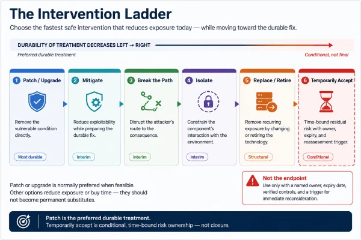
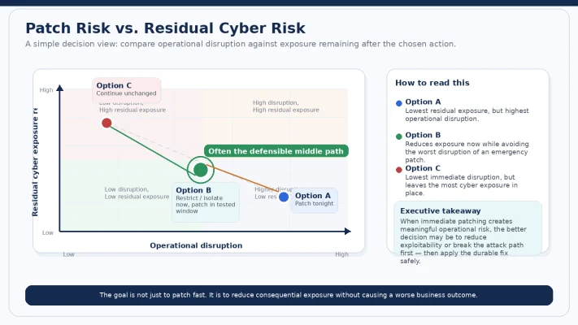
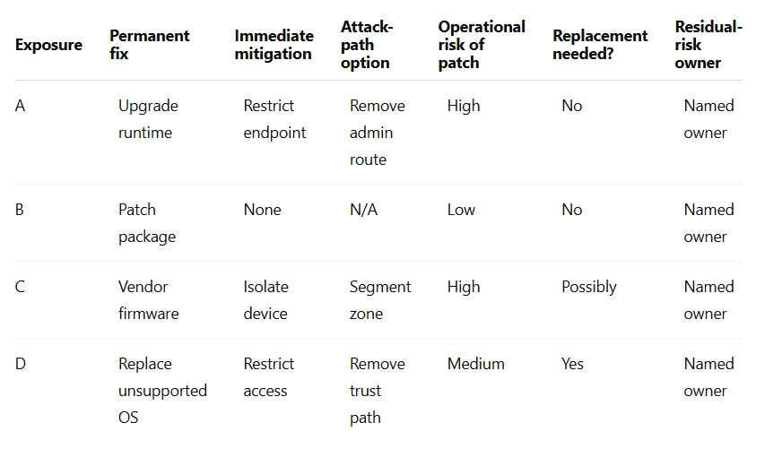

The objective isn’t to deploy the most patches. It’s to reduce consequential exposure without creating a worse business outcome.
A Critical vulnerability affects a customer-facing production platform.
Exploitation is credible. The service matters. The vulnerability deserves action.
So far, everyone agrees.
Then Engineering explains what “patch it” actually means.
The vendor fix requires a major runtime upgrade. That upgrade touches several dependencies. Regression testing normally takes two weeks. The service supports a revenue-generating customer process. And the last emergency upgrade of this component caused a production incident.
Security says:
“We can’t leave a Critical vulnerability open.”
Operations says:
“We can’t introduce an uncontrolled outage.”
Engineering says:
“We can patch it — but not safely tonight.”
Who is right?
Possibly all three.
And this is where vulnerability management stops being a patch-management exercise and becomes a risk decision.
Patching is usually the right destination
I want to establish this early because otherwise the argument is easy to misread.
Security patches exist for a reason.
If a vendor has corrected a vulnerable condition, applying the supported fix is normally the cleanest and most durable way to remove that weakness.
NIST describes enterprise patch management as a form of preventive maintenance for technology rather than optional housekeeping. [1]
So this article is not arguing:
Don’t patch.
It is arguing something more specific:
Don’t confuse patching with the entire remediation strategy.
Sometimes the permanent fix should happen immediately.
Sometimes exposure should be reduced immediately while the permanent fix is engineered safely.
Sometimes architecture can remove the attacker’s path before the vulnerable code is touched.
Sometimes the platform is old enough that patching is no longer the real answer.
And occasionally leadership may consciously carry residual exposure for a defined period.
The CISO’s job is knowing which situation the organization is actually in.
A patch is also a production change
Security teams naturally focus on the risk of not patching.
Good Operations teams also focus on the risk of patching badly.
Both risks are real.
A security update can require:
dependency changes,
application restarts,
firmware updates,
database changes,
configuration changes,
regression testing,
vendor certification,
or downtime.
In resilient and well-automated enterprise environments, this may be routine.
In legacy systems, operational technology, embedded platforms, resource-constrained devices, and other fragile environments, patching and vulnerability assessment can carry additional operational constraints. Recent work on OT and heterogeneous environments continues to highlight those challenges. [5][8]
That does not make patch delay safe.
It means the decision has two sides:
Cyber risk of leaving the weakness exposed
versus
Operational risk introduced by the remediation itself
The leadership mistake is pretending only one of those exists.
The best remediation decision reduces cyber exposure without blindly transferring the risk into availability, safety, customer impact, or operational failure.
Article 2 answered “what should go first?” This one answers “then what?”
Article 2 introduced SCOPE:
Severity
Current Threat
Organizational Consequence
Path & Reachability
Existing Controls
That model was deliberately designed to stop prioritization from ending at a Base CVSS score.
CVSS remains an important severity framework, and CVSS v4.0 itself separates Base, Threat, Environmental, and Supplemental metric concepts. [2]
Threat evidence also matters. CISA’s Known Exploited Vulnerabilities catalog provides a separate signal: whether exploitation has been observed in the wild. [3]
Research such as Shimizu and Hashimoto’s Vulnerability Management Chaining framework similarly demonstrates the value of combining signals such as CVSS, EPSS, and KEV rather than treating any one of them as sufficient for prioritization. [4]
SCOPE therefore helps answer:
How urgently does this exposure deserve attention?
But urgency is not an intervention.
Once the decision is:
“This matters.”
we still need to decide:
“What do we actually do?”
That is the ACT step in:
FIND → OWN → DECIDE → ACT → VERIFY
Too many vulnerability programs collapse ACT into a single word:
PATCH
That is too narrow.
The Intervention Ladder
For a material vulnerability, I would consider six response classes:
PATCH / UPGRADE
↓
MITIGATE
↓
BREAK THE PATH
↓
ISOLATE
↓
REPLACE / RETIRE
↓
TEMPORARILY ACCEPT
These are not equally desirable permanent ocomes.
They are not excuses for leaving vulnerabilities unresolved.
They are explicit risk-treatment choices.
Cyber-risk treatment research similarly distinguishes multiple forms of treatment rather than assuming remediation consists of one universal technical action. [6]
Patch or upgrade should normally remain the preferred durable destination when it is feasible.
The ladder exists because:
“Feasible” and “immediately” are not always the same word.

1. Patch or upgrade
This is normally the cleanest permanent treatment.
Remove the vulnerable condition.
Apply the vendor fix.
Upgrade the dependency.
Replace the vulnerable library.
Update firmware.
Rebuild the container.
Redeploy the workload.
If the patch is:
supported,
tested,
operationally safe,
and available inside the required risk window,
then this should usually be the easy decision.
The difficult cases begin when one of those assumptions is false.
2. Mitigate
Sometimes the permanent fix cannot land safely today.
Exposure may still be reducible today.
For example:
disable vulnerable functionality,
remove an exposed endpoint,
restrict administrative access,
tighten authentication,
reduce privilege,
change configuration,
block a relevant request pattern,
increase monitoring,
or deploy a validated temporary control.
This is not the same as declaring the vulnerability fixed.
It is:
reducing the attack opportunity while permanent remediation is prepared.
That distinction matters.
The ticket may remain open.
The vulnerability may still technically exist.
But the exploitable exposure may have fallen materially.
Which is exactly why:
ticket status and security outcome are not the same thing.
Recent work on heterogeneous-network vulnerability management provides a useful practical illustration of this idea: mitigation can include policy enforcement, selective service isolation, and host quarantine rather than waiting for a patch to be the only available action. [8]
3. Break the attack path
Article 2 introduced a distinction I think matters increasingly:
vulnerability reduction
versus
attack-path destruction.
This is where that distinction becomes an intervention.
Suppose a vulnerable internal service cannot be upgraded for ten days.
But the dangerous scenario depends on an attacker reaching it through a management network.
You may be able to:
remove that route,
restrict access to a hardened jump host,
change a trust relationship,
remove unnecessary credentials,
reduce privilege,
segment the service,
or disable the identity path enabling lateral movement.
The CVE still exists.
The attacker’s usable route may not.
That is an important difference.
Attack-path and vulnerability-chaining research reinforces the broader point that vulnerabilities do not necessarily operate in isolation; their position and relationship to other exploitable conditions can change the practical significance of the exposure. [4]
Sometimes the fastest way to reduce exposure is not changing the vulnerable node. It is changing the architecture around it.
This is why architects belong in vulnerability-management decisions.
4. Isolate
Isolation is the more aggressive option.
If we cannot trust the component, reduce its ability to interact with the rest of the enterprise.
That may mean:
network quarantine,
application isolation,
removing internet access,
restricting egress,
moving the service behind controlled access,
taking a replica offline,
or temporarily removing functionality.
This becomes especially relevant when:
exploitation is active,
a patch is unavailable,
the technology is legacy,
or the business can tolerate reduced functionality better than compromise.
Research on OT and heterogeneous environments makes this particularly relevant because some systems cannot be treated with the same patch cadence or disruption tolerance as conventional enterprise IT. [5][8]
Isolation has a cost.
That is the point.
Sometimes leadership should consciously choose:
business degradation over uncontrolled cyber exposure.
5. Replace or retire
Some vulnerabilities are trying to tell you something larger.
The operating system is unsupported.
The product is end-of-life.
The library cannot be upgraded without rewriting the application.
The vendor has disappeared.
The platform has accumulated so much dependency debt that every patch becomes a crisis.
At that point, continuing to ask:
“Why hasn’t this CVE been patched?”
may be missing the actual issue.
The problem is no longer one vulnerability.
It is:
architecture or lifecycle debt.
The right intervention may be:
replace the component,
migrate the workload,
modernize the application,
retire the service,
or remove the business dependency entirely.
There is an important difference here:
Patching treats the instance. Replacement can eliminate the class of recurring exposure.
6. Temporarily accept
There are legitimate situations where leadership may decide not to take immediate permanent remediation action.
But I would make this the hardest rung to normalize.
Risk acceptance should never mean:
“Security documented it, so we’re done.”
A credible temporary acceptance needs:
an accountable risk owner,
a documented rationale,
the threat assumptions behind the decision,
the controls being relied upon,
a defined expiration date,
a permanent remediation plan,
and explicit triggers for reconsideration.
Compare these two statements.
Version 1
Exception approved.
Version 2
Accepted for 21 days because the affected function is demonstrably unreachable from the relevant attack paths, a validated control is in place, and permanent remediation is scheduled for the next production release. Reassess immediately if exploitation activity or architecture changes.
The first is a status.
The second is a decision.
Temporary should mean temporary
This is where vulnerability programs accumulate invisible debt.
An exception gets approved for 30 days.
Then renewed.
Then renewed again.
The original approver changes roles.
The architecture changes.
The service becomes internet-facing.
The business starts depending on it for something more important.
The threat environment changes.
Yet the original justification remains attached to the ticket as if time stopped.
That is why I think risk acceptance needs something like a:
Risk-Acceptance Half-Life
I am not presenting that as an established industry metric.
I mean it as a governance principle:
The older an exception becomes, the less confidence leadership should have that the assumptions behind it are still true.
Time should increase scrutiny.
It should not normalize the exception.
“Compensating control” may be one of the most abused phrases in vulnerability management
It can mean something real.
Or it can mean:
“We have a firewall somewhere.”
Those are not the same thing.
If a compensating control is the reason we are delaying permanent remediation, I want evidence.
Does segmentation actually block the relevant route?
Does the WAF stop the exploit technique we care about?
Does authentication materially prevent exploitation—or does the attacker already have a plausible credential path?
Does EDR detect the relevant post-exploitation behaviour?
Was the vulnerable feature really disabled everywhere?
Is isolation technically enforced or just documented?
A compensating control should reduce a specific part of the attack scenario.
And we should be able to test that claim.
A compensating control is not a sentence in a risk exception. It is a security hypothesis that should be verified.
The decision is not “patch or don’t patch”
A better executive review presents choices.
Consider the opening scenario again.
Option A — Patch tonight
Cyber benefit: The vulnerable condition is removed.
Operational consequence: Emergency production change with meaningful outage probability.
Option B — Restrict and isolate tonight, patch during a tested change window
Cyber benefit: Reachable exposure is materially reduced immediately.
Operational consequence: Limited functional impact.
Residual risk: The vulnerability remains present for seven days.
Option C — Continue unchanged
Cyber benefit: None.
Operational consequence: None today.
Residual risk: Material exploitable exposure remains.

Now we have an actual decision.
And in some situations:
Option B is the defensible answer.
Not because patching is unimportant.
Because:
risk reduction starts today while permanent remediation follows safely.
It is important not to turn this figure into another mechanical decision rule.
Option B is not automatically correct.
The answer still depends on:
threat activity,
reachability,
business consequence,
control effectiveness,
and operational change risk.
This is remediation economics
Every intervention consumes something.
Engineering time.
Change capacity.
Downtime.
Architecture effort.
Customer tolerance.
Capital.
Management attention.
The goal is not to minimize those costs.
Security costs money.
The objective is to make sure the intervention buys meaningful reduction in consequential exposure.
A useful leadership question is:
How much meaningful exposure do we remove relative to the engineering effort and operational risk of the intervention?
Not as a magic formula.
As a decision discipline.
Suppose:
Patch A closes 500 scanner findings caused by one vulnerable base image.
Architecture Change B removes a privileged path used across several attack scenarios.
Upgrade C eliminates an unsupported platform that generates repeated vulnerability exceptions every month.
All three consume engineering capacity.
Which comes first?
The answer may have very little to do with raw CVE count.
That is:
Remediation Economics
Architecture can outperform patch volume
Imagine 200 vulnerabilities spread across 50 internal servers.
A traditional vulnerability program may create 200 remediation tickets.
An architect notices something else:
40 of those systems share an unnecessary privileged management path from user networks.
Removing that path does not eliminate the 200 vulnerabilities.
But it may materially reduce the attackability of many of them at once.
That does not mean:
“Don’t patch the servers.”
It means:
“Don’t ignore an architectural intervention simply because the vulnerability dashboard only knows how to count patches.”
The patch program and architecture program should reinforce each other.
Not compete for the same slide.
The wrong metric can force the wrong decision
Suppose leadership measures only:
Percentage of Critical vulnerabilities patched within 30 days
What will the organization optimize?
Patch completion.
Even when:
an emergency change carries unnecessary outage risk,
temporary isolation could reduce exposure in hours,
an architecture change could eliminate several attack paths at once,
or a legacy platform should really be replaced rather than patched again.
The metric is not useless.
It becomes dangerous when it turns the:
means
into the:
outcome.
Recent research on enterprise remediation cadence makes a related point: MTTR and SLA compliance can be useful, but they can hide how remediation actually reaches the estate through release trains, maintenance windows, deployment rings, or emergency paths. [7]
The actual outcome is:
Verified reduction in consequential exposure.
Patching is one of the strongest ways to achieve that.
It is not the definition of it.
What I would require when someone says “we can’t patch”
That sentence deserves skepticism.
Sometimes it genuinely means:
we cannot safely patch this today.
Sometimes it means:
the owner does not want to prioritize it,
regression testing is weak,
the change process is slow,
the vendor relationship is poor,
the architecture is brittle,
or the organization has tolerated technical debt for too long.
Those are not the same problem.
So when someone tells me:
“We can’t patch this.”
I want five answers.
1. Why exactly not?
Technical impossibility?
Vendor dependency?
Downtime?
Safety?
Compatibility?
No owner?
No capacity?
Different blocker.
Different intervention.
2. For how long?
Hours?
Seven days?
Six months?
Indefinitely?
Those are four very different risk postures wearing the same ticket status.
3. What can reduce exposure today?
Restrict?
Disable?
Isolate?
Reduce privilege?
Break the path?
A delayed patch should not automatically mean unchanged exposure.
4. What would make permanent remediation possible?
Testing capacity?
Funding?
Vendor escalation?
Maintenance window?
Architecture work?
Replacement?
Name the real blocker.
5. Who owns the residual risk—and when is the decision revisited?
Name.
Not department.
This brings us directly back to Article 1.
A temporary acceptance with no accountable owner and no revisit date is not a controlled risk decision.
It is an exception quietly becoming permanent.
Verification matters even more when you don’t patch
If the decision is permanent remediation, verification asks:
Is the vulnerable condition gone?
If the decision is mitigation:
Does the mitigation actually block the exploit scenario?
If the decision is attack-path destruction:
Is the path genuinely broken?
If the decision is isolation:
Can the component still communicate through an unexpected route?
If the decision is replacement:
Did we actually remove the old platform—or leave it running quietly somewhere?
If the decision is acceptance:
Are the original assumptions still true?
This is why VERIFY sits after ACT.
Not after PATCH.
A practical decision hierarchy
For material exposure, I would generally ask in this order.
Can we safely remove the vulnerable condition now?
If yes:
Patch / upgrade / rebuild.
If no:
Can we materially reduce exploitability now?
Mitigate.
Then:
Can we remove the attacker’s path to the consequence?
Break the path.
If necessary:
Can we separate the vulnerable component from the environment?
Isolate.
If the problem is structural:
Should this technology still exist?
Replace / retire.
And if meaningful exposure remains temporarily:
Who is consciously carrying that residual risk, until when, and under what assumptions?
Time-bound acceptance.
That is the Intervention Ladder.
The Monday-morning exercise
Take the ten most consequential exposures already identified through SCOPE.
For each one, add:

Then ask:
Why are we treating all four as “patch tickets” when they are clearly four different management decisions?
That discussion will tell you a great deal about the maturity of the vulnerability program.
What this means for the board
I would not take a board slide that says:
96% of Critical vulnerabilities were patched within SLA
and assume the story is good.
I would rather know:
How much consequential exposure remains?
Which material exposures have no safe immediate patch?
Which temporary controls are carrying significant risk?
Which recurring exposures require architecture or replacement investment?
How much risk has been explicitly accepted?
How old are those acceptances?
And can management show that its chosen interventions actually reduced attackability?
That is a board conversation about risk.
Not workflow hygiene.
AI will make remediation choice more interesting too
AI is not only changing vulnerability discovery.
Research is also increasingly examining context-aware vulnerability management, automated mitigation, and orchestration of response actions.
For example, Lopes, Moura and Marinheiro describe a framework that combines context-aware prioritization with automated network-level mitigation such as selective service isolation and quarantine. [8]
That direction is important.
But it creates another governance question.
An automated or AI-generated intervention that reduces a vulnerability but changes system behaviour can still create enterprise risk.
So future remediation systems will need to answer more than:
“Did the patch compile?”
They will need to establish:
Did the fix remove the vulnerable condition?
Did required functionality remain intact?
Did the change introduce another weakness?
What dependencies changed?
What is the rollback path?
And is another intervention actually safer?
Autonomous remediation may become technically viable in more environments.
Enterprise authority to make those changes should still depend on context, guardrails, and accountability.
Five questions I would ask before approving “patch later”
1.
What prevents us from safely applying the permanent fix now?
2.
What specific exposure remains until we do?
3.
What can we change today to reduce exploitability or break the attack path?
4.
How have we verified that the temporary control actually works?
5.
Who owns the residual risk, and when does this decision expire?
If those questions cannot be answered:
“Patch later” is not a strategy. It is a delay.
My position
I am not arguing against patching.
Quite the opposite.
Organizations should become extremely good at routine, automated, low-friction patching wherever their architecture allows it.
But good vulnerability management requires something more.
The goal is not to maximize patch activity. The goal is to minimize consequential exposure.
Sometimes those are exactly the same thing.
Sometimes the fastest defensible route is:
mitigate now,
break the path now,
isolate now,
and:
patch next.
Sometimes the vulnerability is evidence that the technology needs to be replaced.
And occasionally leadership may consciously carry residual risk for a defined period.
But every one of those decisions should have:
an owner,
a rationale,
a deadline,
a permanent treatment plan,
and evidence that the chosen intervention actually reduced exposure.
Because:
Patch is an intervention. Risk reduction is the outcome.
That is the distinction I want vulnerability management to make.
Monday-morning takeaway
Take one consequential vulnerability currently stuck in your backlog for a reason other than:
“Nobody has gotten to it yet.”
Run it through the Intervention Ladder.
Not to justify inaction.
To answer three things clearly:
Which intervention are we using today?
Who owns that decision?
What moves us toward the durable fix?
And if the honest answer is:
Temporarily accept
make sure the decision has:
a named owner,
an expiry date,
a verified control,
and a trigger for immediate reconsideration.
Because temporary exposure should be:
managed.
Not merely documented.
Next in the series
When Does Risk Acceptance Become Negligence?
A temporary exception can be a rational risk decision.
A permanently renewed exception can become something very different.
The next article will look at:
risk-acceptance half-life,
who should have authority to accept cyber risk,
when changing threat or architecture invalidates the original decision,
and:
how to recognize when “temporary” risk has quietly become unmanaged debt.
References
[1] Souppaya, M., & Scarfone, K. (2022). Guide to Enterprise Patch Management Planning: Preventive Maintenance for Technology. NIST Special Publication 800-40 Rev. 4. https://nvlpubs.nist.gov/nistpubs/SpecialPublications/NIST.SP.800-40r4.pdf
[2] FIRST. Common Vulnerability Scoring System Version 4.0. https://www.first.org/cvss/v4.0/
[3] Cybersecurity and Infrastructure Security Agency. Known Exploited Vulnerabilities Catalog. https://www.cisa.gov/known-exploited-vulnerabilities-catalog
[4] Shimizu, N., & Hashimoto, M. (2026). “Vulnerability Management Chaining: An Integrated Framework for Efficient Cybersecurity Risk Prioritization.” IEEE Access. https://ieeexplore.ieee.org/abstract/document/11397608/
[5] Kapoor, S., Kumar, S., Vardhan, H., et al. (2025). “Cyber Security of OT Networks: A Tutorial, Survey of Attacks and Overview of Current State of Defense Tools, Protocols & Challenges.” arXiv:2502.14017. https://arxiv.org/abs/2502.14017
[6] Sánchez-García, I. D., Feliu, T. S., & Calvo-Manzano, J. A. (2025). “Building a Cyber Risk Treatment Taxonomy.” Cluster Computing. https://link.springer.com/article/10.1007/s10586-024-04899-1
[7] Omelchenko, A. (2026). “Mean Time to Remediate Is Not a Fielding Model: A Cadence Audit for Enterprise Vulnerability Management.” arXiv:2607.04511. https://arxiv.org/abs/2607.04511
[8] Lopes, R., Moura, J., & Marinheiro, R. N. (2026). “Orchestrated Vulnerability Management for Heterogeneous Networks: Adaptive Two-Stage Vulnerability Assessment, Context-Aware Risk Prioritization, and Automated Mitigation.” arXiv:2608.08162. https://arxiv.org/abs/2608.08162